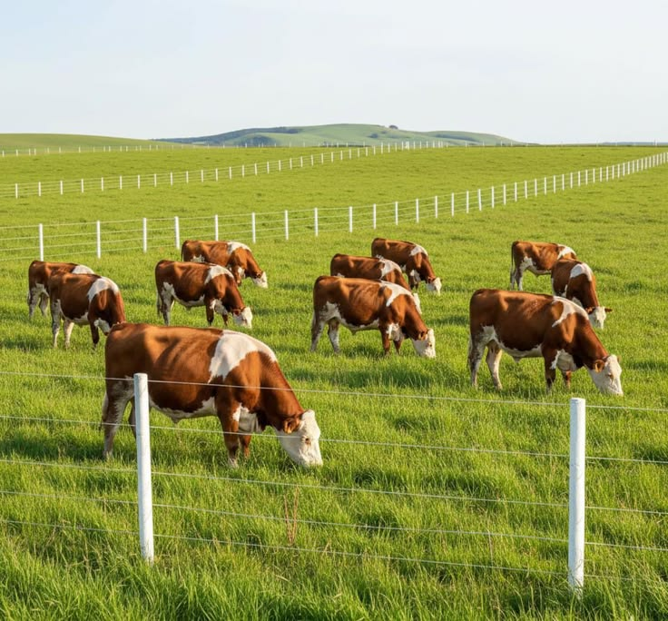
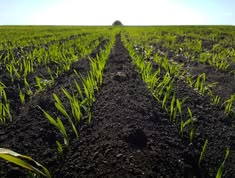
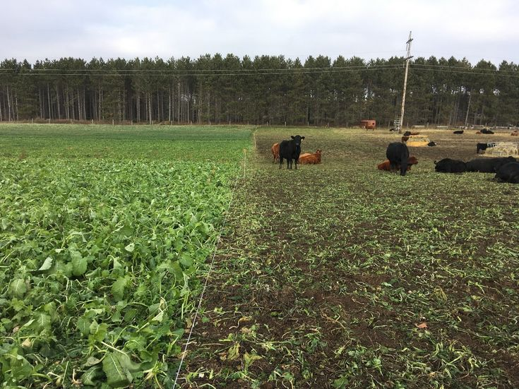
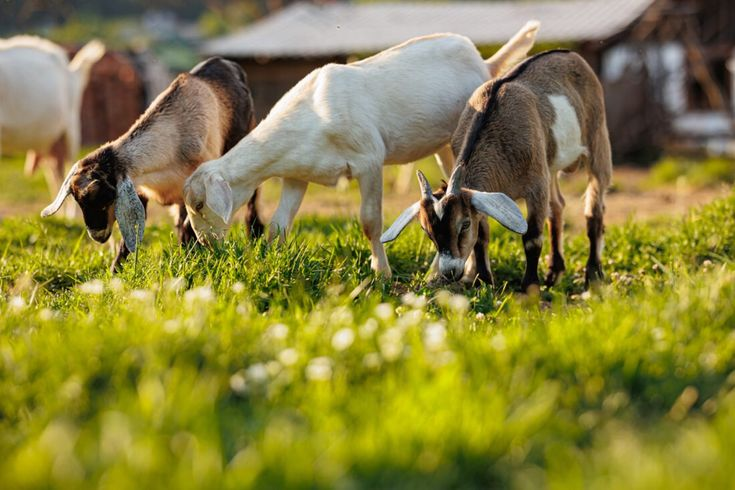
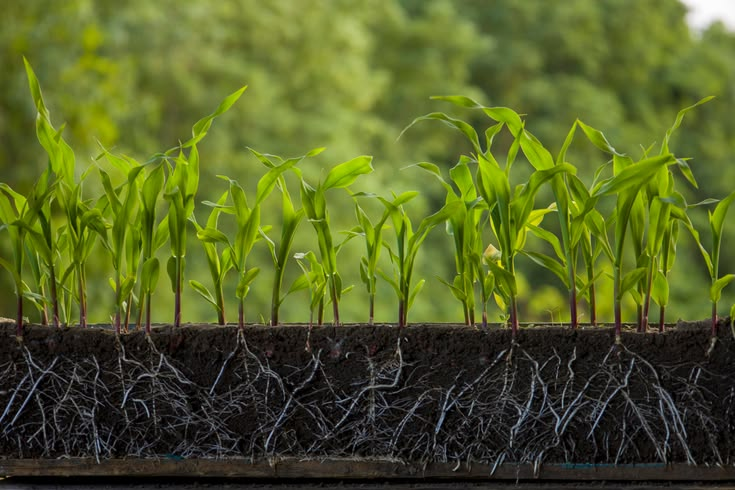
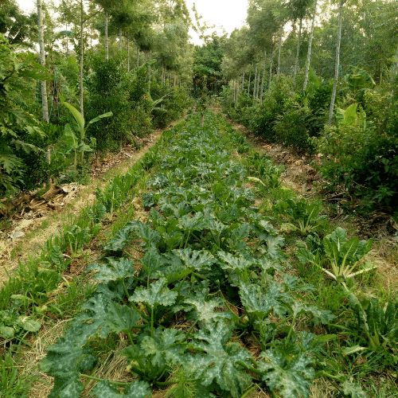
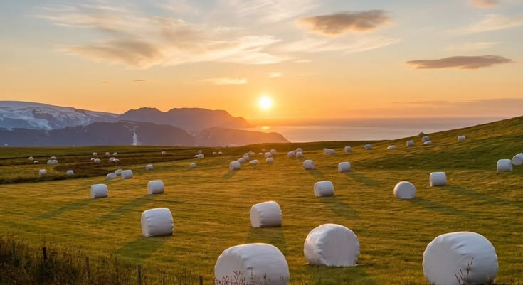
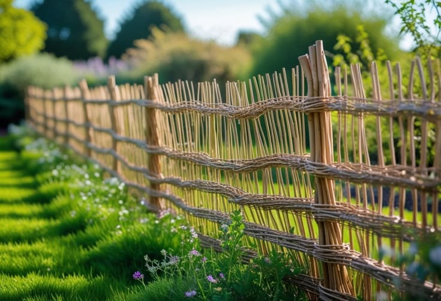
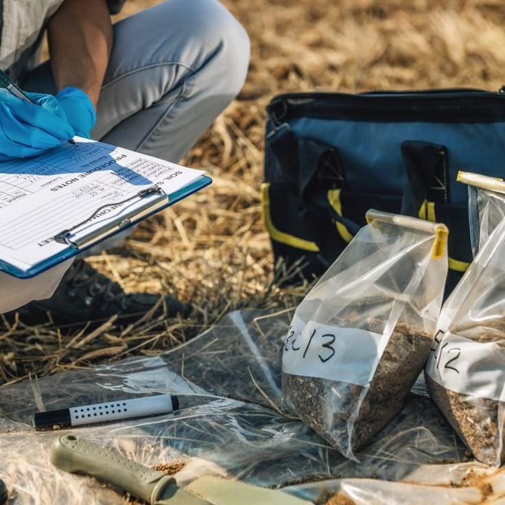
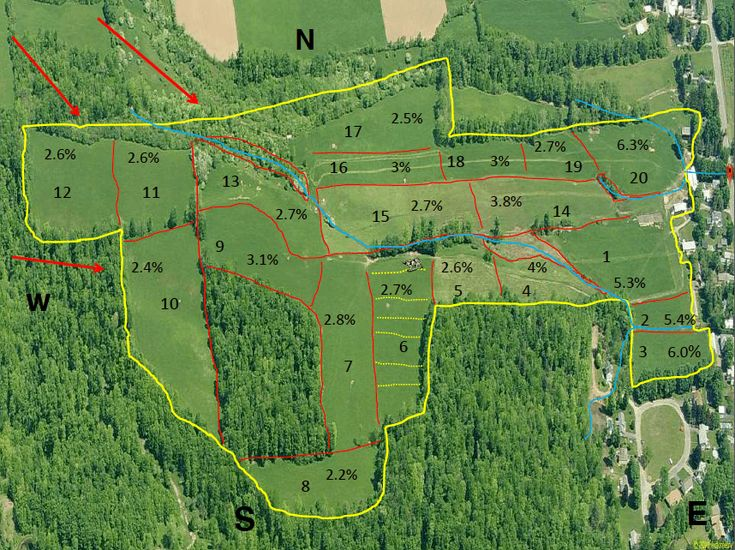

Adaptive Cell Grazing
Daily paddock shifts with mobile electric fencing to break parasite cycles.

High-density rotational grazing frameworks accelerating pasture recovery and subsoil carbon sequestration.
Synchronizing concentrated herd impact with extended botanical recovery intervals.

Phase 01Trampling mulch into topsoil and inoculating biology with manure.

Phase 02Migrating livestock before root shutdown to preserve crown vigor.

Phase 03Photosynthetic recovery pumping carbon exudates into deep microbial pools.
Interplanting deep-rooted trees reduces animal heat stress and evaporation.

Standardized grazing models deployed across varied terrain and livestock classes.

Daily paddock shifts with mobile electric fencing to break parasite cycles.

Distributing dormant hay bales to deposit carbon residue and retain snow.

Flash grazing along stream edges to filter agricultural runoff safely.
Direct pasture laboratory diagnostics monitoring ecological vitality.
Reduced soil compaction enables free root elongation.
Rapid incorporation of surface dung into subterranean tunnels.

Higher soluble sugar and minerals in pasture forage.
Recalcitrant carbon fixed beneath 30cm soil horizon.

Certified grazing advisors modeling paddock topography and seasonal animal stocking.